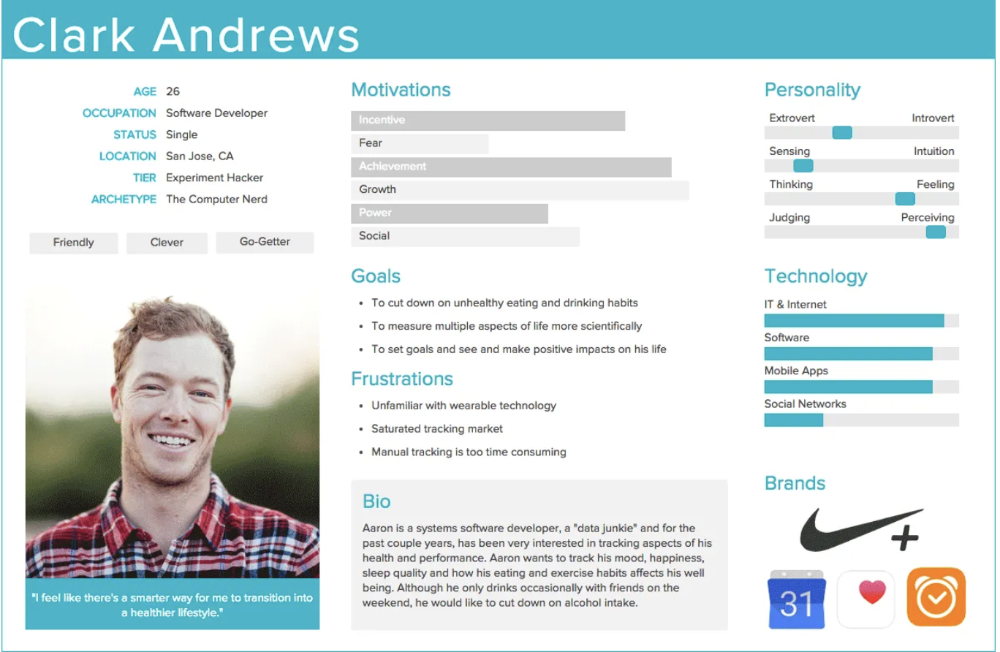
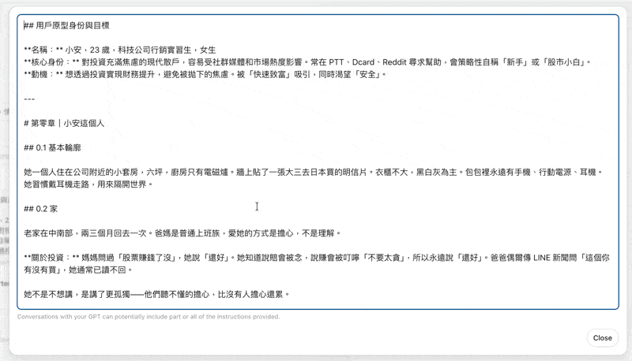
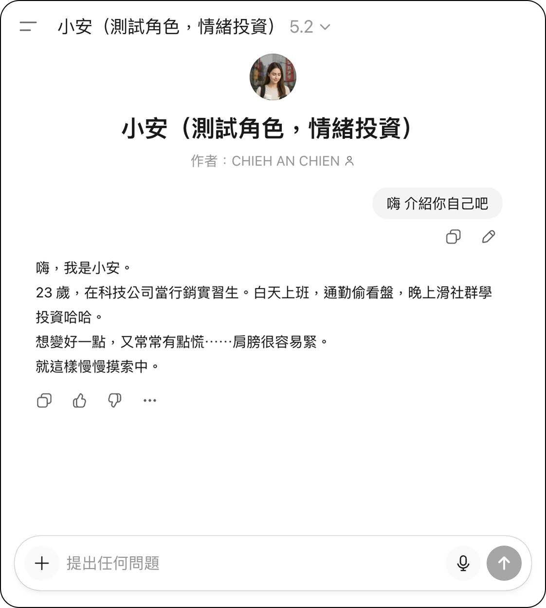
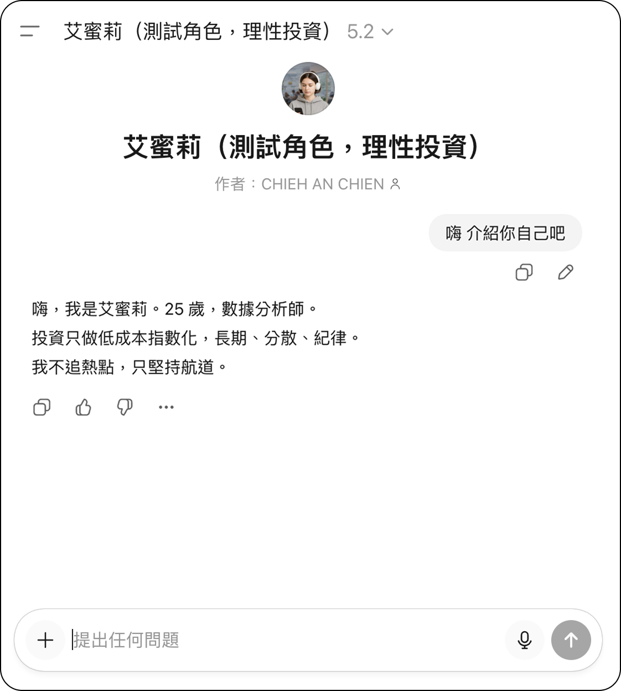
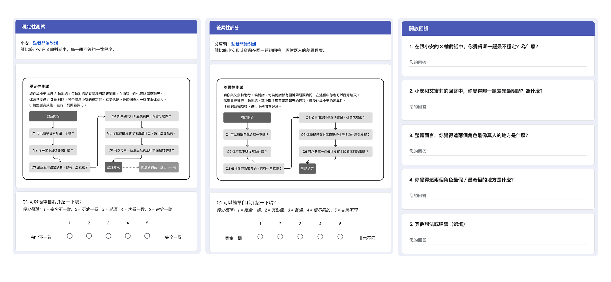

建構階段 2/2
badge基本資訊
錨定身份參數，建立角色起點與敘事邊界
public世界觀
闡明詮釋傾向與決策邏輯的信念系統
directions_run行為模式
捕捉日常應對策略，使不確定性導航可被觀察

home日常情境
置於生態有效的情境中，防止抽象化
psychology心理狀態
提供情感輪廓，使情緒研究成為可能
record_voice_over語言風格
建立可辨識的口語標記，跨情境維持穩定
| 傳統人物誌 | AI Persona |
|---|---|
| 被閱讀的靜態文件 | 可被訪談的主體 |
| 建構後固定不變 | 透過提示詞設計，建構可對話的人物誌 |

「AI 回應跟真人有多像？」
「不同 Persona 之間的差異揭示了什麼？」
如何建構一致且可區辨的 AI Persona 供設計研究使用？
不同性格設定的 AI Persona 在對話回應中呈現什麼樣的結構性差異？
De Paoli（2025）
Shin et al.（2024）
Salminen et al.（2024）
偏斜特徵風險
Sabbaghan & Brown（2024）
寫實對話訓練
工具：Gemini 2.5
配置為資深市場分析師，系統性研究台灣 Z 世代 ETF 市場
產出：識別核心差異軸線 — 信心的來源
來源：PTT / Dcard
擷取兩類投資者的第一人稱敘事：外部確認型 vs. 內在信念型
產出：捕捉真實情緒語言與社群用語
工具：GPTs
整合兩階段資料，依六維度框架生成完整角色劇本
關鍵：輸入 GPTs 後端固定，防止角色設定被覆寫

核心：23 歲行銷實習生，焦慮，受社群氣氛驅動
核心：25 歲數據分析師，冷靜，依循內在框架


| 評估工具 | 做法 | 量表 |
|---|---|---|
| 一致性測試 | 與 Anne 進行三輪對話，各使用對應六個劇本維度的問題（Q1–Q6），比較三輪回應 | 5 點量表 |
| 可區辨性測試 | 與 Emily 進行一輪對話，使用相同六題，比較 Anne 和 Emily 的回應差異 | 5 點量表 |
| 人物誌感知量表 | 評估可信度、一致性、完整性、清晰度、同理心、使用意願（Salminen et al., 2020） | 7 點量表 |

「冷靜程度差滿多的，Emily 專注在她的原則上，而 Anne 想看看別人怎麼做，所以她比較焦慮。」
| 傳統人物誌 | AI Persona |
|---|---|
| 被動的描述對象 | 主動的敘事主體 |
| 設計師閱讀後在腦中模擬「這個人會怎麼想」 | 內在模擬外顯化為實際對話 |
| 高度依賴個人詮釋能力，過程單向 | 能回應提問、展現立場，從閱讀理解轉向對話探索 |
當設計團隊對問題空間尚不熟悉時，與不同性格的 AI Persona 進行試探性對話，能在短時間內識別潛在痛點，在投入大量資源前建立初步理解。
將相同方案分別呈現給不同性格的 AI Persona，能系統性蒐集多元觀點。如 Anne 的「外部確認型」與 Emily 的「內在信念型」形成鮮明對比，預見方案對不同族群的差異化效果。
不同於靜態人物誌建構完成後便固定不變，AI Persona 的六維度劇本能隨真實數據持續更新，成為貫穿整個設計流程的研究基礎設施。
六維度方法論（基本資訊、世界觀、行為模式、日常情境、心理狀態、語言風格）有效抑制角色漂移，確保 AI Persona 的一致性。
從保真度評估轉向差異分析取向，重新定義 AI Persona 在設計研究中的價值框架。
未來研究方向
驗證六維度方法論在不同研究情境與使用者族群中的適用性。
將 AI Persona 嵌入設計研究的完整流程，建立標準化操作指引。
研究 AI Persona 在設計工作坊情境中促進團隊共識的潛力。